3D lights and shadows
Introduction
Light sources emit light that mixes with the materials and produces a visible result. Light can come from several types of sources in a scene:
From the material itself, in the form of the emission color (though it does not affect nearby objects unless baked or screen-space indirect lighting is enabled).
Light nodes: DirectionalLight3D, OmniLight3D, SpotLight3D, and AreaLight3D.
Ambient light in the Environment or Reflection probes.
Global illumination (LightmapGI, VoxelGI or SDFGI).
The emission color is a material property. You can read more about it in the Standard Material 3D and ORM Material 3D tutorial.
See also
You can compare various types of lights in action using the 3D Lights and Shadows demo project.
Light nodes
There are four types of light nodes: DirectionalLight3D, OmniLight3D, SpotLight3D, and AreaLight3D. Let's take a look at the common parameters for lights:

Each property has a specific function:
Color: Base color for emitted light.
Energy: Energy multiplier. This is useful for saturating lights or working with High dynamic range lighting.
Indirect Energy: Secondary multiplier used with indirect light (light bounces). This works with Using Lightmap global illumination, VoxelGI or SDFGI.
Volumetric Fog Energy: Secondary multiplier used with volumetric fog. This only has an effect when volumetric fog is enabled.
Negative: Light becomes subtractive instead of additive. It's sometimes useful to manually compensate some dark corners.
Specular: Affects the intensity of the specular blob in objects affected by this light. At zero, this light becomes a pure diffuse light.
Bake Mode: Sets the bake mode for the light. See Using Lightmap global illumination.
Cull Mask: Objects that are in the selected layers below will be affected by this light. Note that objects disabled via this cull mask will still cast shadows. If you don't want disabled objects to cast shadows, adjust the Cast Shadow property on the GeometryInstance3D to the desired value.
See also
See Physical light and camera units if you wish to use real world units to configure your lights' intensity and color temperature.
Light number limits
When using the Forward+ renderer, Godot uses a clustering approach for real-time lighting. As many lights as desired can be added (as long as performance allows). However, there's still a default limit of 512 clustered elements that can be present in the current camera view. A clustered element is an omni light, a spot light, an area light, a decal, or a reflection probe. This limit can be increased by adjusting Max Clustered Elements in Project Settings > Rendering > Limits > Cluster Builder.
When using the Mobile renderer, there is a limitation of 8 OmniLights + 8 SpotLights per mesh resource. There is also a limit of 256 OmniLights + 256 SpotLights that can be rendered in the current camera view. These limits currently cannot be changed.
When using the Compatibility renderer, up to 8 OmniLights + 8 SpotLights can be rendered per mesh resource. This limit can be increased in the advanced Project Settings by adjusting Max Renderable Elements and/or Max Lights per Object in Rendering > Limits > OpenGL, at the cost of performance and longer shader compilation times. The limit can also be decreased to reduce shader compilation times and improve performance slightly.
With all rendering methods, up to 8 DirectionalLights can be visible at a time. However, each additional DirectionalLight with shadows enabled will reduce the effective shadow resolution of each DirectionalLight. This is because directional shadow atlas is shared between all lights.
If the rendering limit is exceeded, lights will start popping in and out during camera movement, which can be distracting. Enabling Distance Fade on light nodes can help reduce this issue while also improving performance. Splitting your meshes into smaller portions can also help, especially for level geometry (which also improves culling efficiency).
If you need to render more lights than possible in a given renderer, consider using baked lightmaps with lights' bake mode set to Static. This allows lights to be fully baked, which also makes them much faster to render. You can also use emissive materials with any global illumination technique as a replacement for light nodes that emit light over a large area.
Shadow mapping
Lights can optionally cast shadows. This gives them greater realism (light does not reach occluded areas), but it can incur a bigger performance cost. There is a list of generic shadow parameters, each also has a specific function:
Enabled: Check to enable shadow mapping in this light.
Opacity: Areas occluded are darkened by this opacity factor. Shadows are fully opaque by default, but this can be changed to make shadows translucent for a given light.
Bias: When this parameter is too low, self-shadowing occurs. When too high, shadows separate from the casters. Tweak to what works best for you.
Normal Bias: When this parameter is too low, self-shadowing occurs. When too high, shadows appear misaligned from the casters. Tweak to what works best for you.
Transmittance Bias: When this parameter is too low, self-shadowing occurs on materials that have transmittance enabled. When too high, shadows will not affect materials that have transmittance enabled consistently. Tweak to what works best for you.
Reverse Cull Face: Some scenes work better when shadow mapping is rendered with face-culling inverted.
Blur: Multiplies the shadow blur radius for this light. This works with both traditional shadow mapping and contact-hardening shadows (lights with Angular Distance or Size greater than
0.0). Higher values result in softer shadows, which will also appear to be more temporally stable for moving objects. The downside of increasing shadow blur is that it will make the grainy pattern used for filtering more noticeable. See also Shadow filter mode.Caster Mask: Shadows are only cast by objects in these layers. Note that this mask does not affect which objects shadows are cast onto.

Tweaking shadow bias
Below is an image of what tweaking bias looks like. Default values work for most cases, but in general, it depends on the size and complexity of geometry.
If the Shadow Bias or Shadow Normal Bias is set too low for a given light, the shadow will be "smeared" onto the objects. This will cause the light's intended appearance to darken, and is called shadow acne:
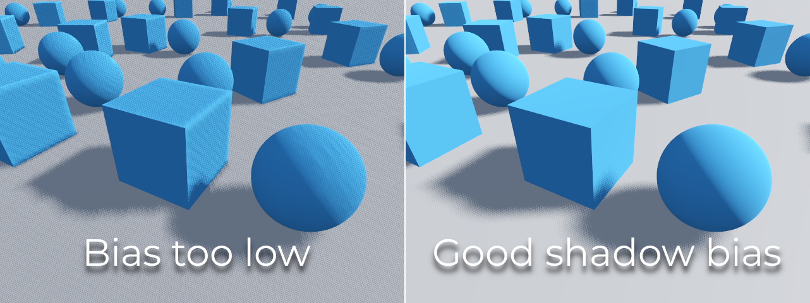
On the other hand, if the Shadow Bias or Shadow Normal Bias is set too high for a given light, the shadow may appear to be disconnected from the object. This is called peter-panning:

In general, increasing Shadow Normal Bias is preferred over increasing Shadow Bias. Increasing Shadow Normal Bias does not cause as much peter-panning as increasing Shadow Bias, but it can still resolve most shadow acne issues efficiently. The downside of increasing Shadow Normal Bias is that it can make shadows appear thinner for certain objects.
Any sort of bias issues can be fixed by increasing the shadow map resolution, at the cost of decreased performance.
Note
Tweaking shadow mapping settings is an art – there are no "one size fits all" settings. To achieve the best visuals, you may need to use different shadow bias values on a per-light basis.
Note on Appearance Changes: When enabling shadows on a light, be aware that the light's appearance might change compared to when it's rendered without shadows in the compatibility renderer. Due to limitations with older mobile devices, shadows are implemented using a multi-pass rendering approach so lights with shadows are rendered in sRGB space instead of linear space. This change in rendering space can sometimes drastically alter the light's appearance. To achieve a similar appearance to an unshadowed light, you may need to adjust the light's energy setting.
Directional light
This is the most common type of light and represents a light source very far away (such as the sun). It is also the cheapest light to compute and should be used whenever possible (although it's not the cheapest shadow-map to compute, but more on that later).
Directional light models an infinite number of parallel light rays covering the whole scene. The directional light node is represented by a big arrow which indicates the direction of the light rays. However, the position of the node does not affect the lighting at all and can be anywhere.
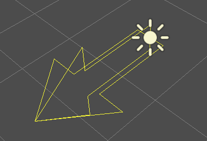
Every face whose front-side is hit by the light rays is lit, while the others stay dark. Unlike most other light types, directional lights don't have specific parameters.
The directional light also offers an Angular Distance property, which
determines the light's angular size in degrees. Increasing this above 0.0
will make shadows softer at greater distances from the caster, while also
affecting the sun's appearance in procedural sky materials. This is called a
contact-hardening shadow (also known as PCSS).
For reference, the angular distance of the Sun viewed from the Earth is
approximately 0.5. This kind of shadow is expensive, so check the
recommendations in PCSS recommendations if setting
this value above 0.0 on lights with shadows enabled.
Directional shadow mapping
To compute shadow maps, the scene is rendered (only depth) from an orthogonal point of view that covers the whole scene (or up to the max distance). There is, however, a problem with this approach because objects closer to the camera receive low-resolution shadows that may appear blocky.
To fix this, a technique named Parallel Split Shadow Maps (PSSM) is used. This splits the view frustum in 2 or 4 areas. Each area gets its own shadow map. This allows small areas close to the viewer to have the same shadow resolution as a huge, far-away area. When shadows are enabled for DirectionalLight3D, the default shadow mode is PSSM with 4 splits. In scenarios where an object is large enough to appear in all four splits, it results in increased draw calls. Specifically, such an object will be rendered five times in total: once for each of the four shadow splits and once for the final scene rendering. This can impact performance, understanding this behavior is important for optimizing your scene and managing performance expectations.
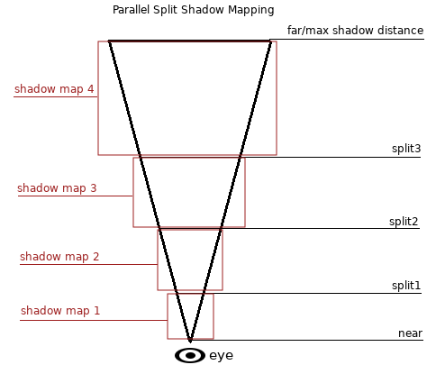
With this, shadows become more detailed:

To control PSSM, a number of parameters are exposed:
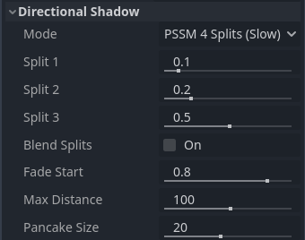
Each split distance is controlled relative to the camera far (or shadow
Max Distance if greater than 0.0). 0.0 is the eye position and
1.0 is where the shadow ends at a distance. Splits are in-between.
Default values generally work well, but tweaking the first split a bit is common
to give more detail to close objects (like a character in a third-person game).
Always make sure to set a shadow Max Distance according to what the scene
needs. A lower maximum distance will result in better-looking shadows and better
performance, as fewer objects will need to be included in shadow rendering. You
can also adjust Fade Start to control how aggressive the shadow fade-out
should be at a distance. For scenes where the Max Distance fully covers the
scene at any given camera position, you can increase Fade Start to 1.0
to prevent the shadow from fading at a distance. This should not be done in
scenes where Max Distance doesn't fully cover the scene, as the shadow will
appear to be suddenly cut off at a distance.
Sometimes, the transition between a split and the next can look bad. To fix this, the Blend Splits option can be turned on, which sacrifices detail and performance in exchange for smoother transitions:

The Shadow > Normal Bias parameter can be used to fix special cases of self-shadowing when objects are perpendicular to the light. The only downside is that it makes the shadow a bit thinner. Consider increasing Shadow > Normal Bias before increasing Shadow > Bias in most situations.
Lastly, Pancake Size is a property that can be adjusted to fix missing shadows when using large objects with unsubdivided meshes. Only change this value if you notice missing shadows that are not related to shadow biasing issues.
Omni light
Omni light is a point source that emits light spherically in all directions up to a given radius.
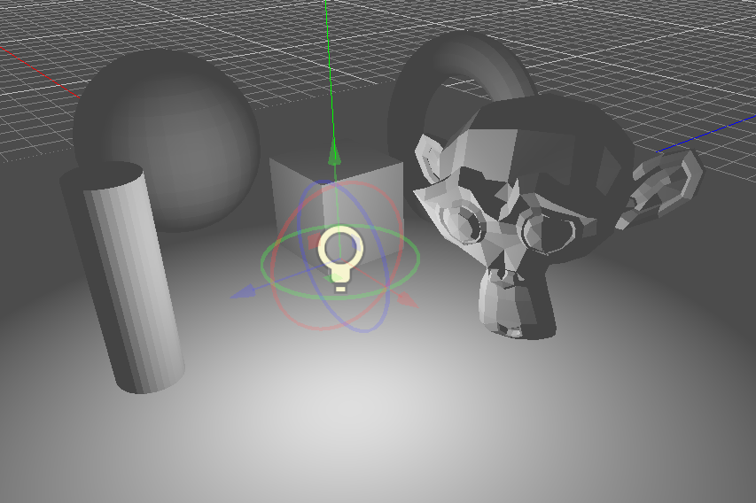
In real life, light attenuation is an inverse function, which means omni lights don't have a radius. This is a problem because it means computing several omni lights would become demanding.
To solve this, a Range parameter is introduced together with an attenuation function.

These two parameters allow tweaking how this works visually in order to find aesthetically pleasing results.
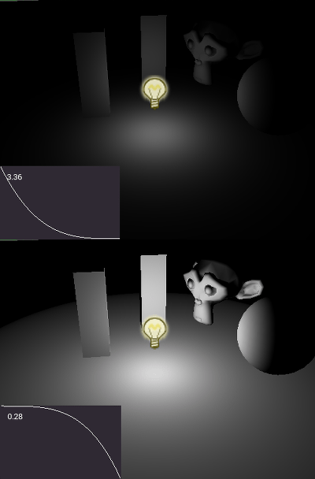
A Size parameter is also available in OmniLight3D. Increasing this value
will make the light fade out slower and shadows appear blurrier when far away
from the caster. This can be used to simulate area lights to an extent. This is
called a contact-hardening shadow (also known as PCSS). This kind of shadow is
expensive, so check the recommendations in
PCSS recommendations if setting this value above
0.0 on lights with shadows enabled.
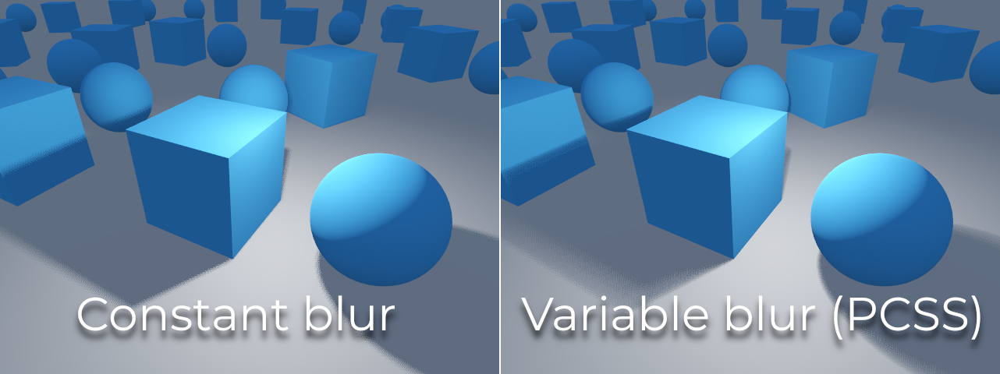
Omni shadow mapping
Omni light shadow mapping is relatively straightforward. The main issue that needs to be considered is the algorithm used to render it.
Omni Shadows can be rendered as either Dual Paraboloid or Cube mapped. Dual Paraboloid renders quickly, but can cause deformations, while Cube is more correct, but slower. The default is Cube, but consider changing it to Dual Paraboloid for lights where it doesn't make much of a visual difference.

If the objects being rendered are mostly irregular and subdivided, Dual Paraboloid is usually enough. In any case, as these shadows are cached in a shadow atlas (more on that at the end), it may not make a difference in performance for most scenes.
Omni lights with shadows enabled can make use of projectors. The projector texture will multiply the light's color by the color at a given point on the texture. As a result, lights will usually appear to be darker once a projector texture is assigned; you can increase Energy to compensate for this.
Omni light projector textures require a special 360° panorama mapping, similar to PanoramaSkyMaterial textures.
With the projector texture below, the following result is obtained:
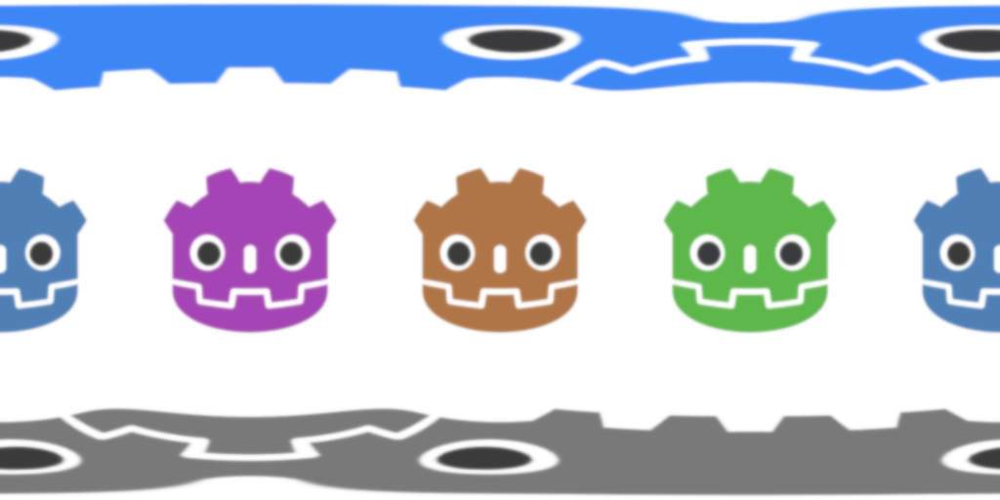

Tip
If you've acquired omni projectors in the form of cubemap images, you can use this web-based conversion tool to convert them to a single panorama image.
Spot light
Spot lights are similar to omni lights, except they emit light only into a cone (or "cutoff"). They are useful to simulate flashlights, car lights, reflectors, spots, etc. This type of light is also attenuated towards the opposite direction it points to.
Spot lights share the same Range, Attenuation and Size as OmniLight3D, and add two extra parameters:
Angle: The aperture angle of the light.
Angle Attenuation: The cone attenuation, which helps soften the cone borders.
Spot shadow mapping
Spots feature the same parameters as omni lights for shadow mapping. Rendering spot shadow maps is significantly faster compared to omni lights, as only one shadow texture needs to be rendered (instead of rendering 6 faces, or 2 in dual paraboloid mode).
Spot lights with shadows enabled can make use of projectors. The projector texture will multiply the light's color by the color at a given point on the texture. As a result, lights will usually appear to be darker once a projector texture is assigned; you can increase Energy to compensate for this.
Unlike omni light projectors, a spot light projector texture doesn't need to follow a special format to look correct. It will be mapped in a way similar to a decal.
With the projector texture below, the following result is obtained:

Note
Spot lights with wide angles will have lower-quality shadows than spot lights with narrow angles, as the shadow map is spread over a larger surface. At angles wider than 89 degrees, spot light shadows will stop working entirely. If you need shadows for wider lights, use an omni light instead.
Area light
Sometimes, you want lighting to come from a large area instead of a single point. Area lights are useful for simulating soft, diffuse lighting, such as light coming from a window or a lit billboard.
Godot provides the AreaLight3D node for this purpose, which emits light from a rectangular area. The node only emits light and has no other visual representation in the scene. The screenshots below use a Sprite3D node as a child of the area light for visualization purposes.
Warning
This type of light is the most expensive to render in real-time. It should be used sparingly, especially when shadows are enabled. Consider using them only for cinematics or when targeting high-end devices.
In Forward+, as soon as one area light is visible in the view frustum, it incurs an additional performance cost on all rendered objects in the scene, even those that are not reached by an area light. This tradeoff allows for a greater number of area lights to be rendered (clustered lighting).
In Mobile and Compatibility, only objects that are reached by an area light incur an additional performance cost.
Area lights can also cast shadows, with variable penumbra simulated using
PCSS by default. The size
of this penumbra can be controlled with the Light3D Size property. This
effect can be quite demanding, so it can be turned off by setting Size to
0.0.
Note
Shadows cast by an area light may look incorrect if the object casting shadows doesn't have enough subdivisions and it's very close to the area light. This is the same limitation as Dual Paraboloid shadow mode on an omni light.

Note
Since area lights are difficult to simulate in a real-time rasterized renderer, they come with a number of limitations.
For small light sources, you will likely get better results when using point lights. Shadows from area lights are crude approximations, as they are calculated as if they were point lights, and may appear to be distorted at the edges. To get a better result, make sure the meshes in the light's range are sufficiently subdivided.
Area lights suffer from light leaking on the backside of geometry closely in front of them at grazing angles, so be careful with where you place them.
Lastly, not all material features are fully supported; area lights are practically limited to Lambertian diffuse and GGX specular shading, while anisotropic materials will appear as if isotropic. Vertex shading is also not implemented for area lights.
Area lights emit light in a rectangular area defined by the Area > Size
property (not to be confused with the generic Light3D Size property). To get
a physically accurate result, you should resize this area to match the size of
the real-life light source you are trying to simulate. For example, if you are
simulating a 1-meter neon tube that is 10 centimeters wide, set the area
size to (1, 0.1) and adjust the energy accordingly.
By default, the light's energy is normalized: the larger the area, the weaker the light. This allows you to change the area size without needing to adjust the energy to compensate, which is useful for animation. You can disable this behavior by unchecking Area > Normalize Energy if you want the energy to be independent of the area size.
The rectangular area can optionally be textured. This can be effectively used to change the light's shape into any 2D shape, or tint it in different colors. The texture's alpha channel is treated as black (no light coming through). The area light's texture will be visible in reflections according to the surface's roughness. This behavior is different from omni/spot projectors, as it does not project the texture directly onto all diffuse lighting.
When using a textures that are transparent or black toward the edges, you might want to leave a gap of a few pixels to make sure the texture is blurred smoothly.
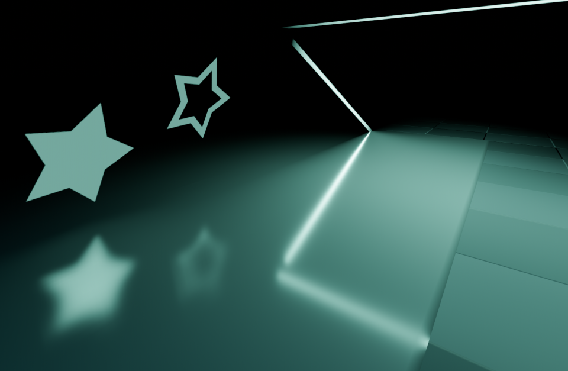
Note
Changing the area light's texture at runtime can be expensive, especially if the texture is large.
To reduce the performance impact of switching textures at runtime, make sure each dimension of an area texture is either a multiple of 128 pixels, or a power of two. This removes the need for a scaling pass, which slows down texture changes. The textures don't necessarily have to be square to be optimal. Examples of optimal texture sizes include 32×64, 128×128, and 256×384.
Textured area lights are not supported in the Compatibility renderer.
Shadow atlas
Unlike Directional lights, which have their own shadow texture, omni, spot, and area lights are assigned to slots of a shadow atlas. This atlas can be configured in the advanced Project Settings (Rendering > Lights And Shadows > Positional Shadow).
The resolution applies to the whole shadow atlas. This atlas is divided into four quadrants:
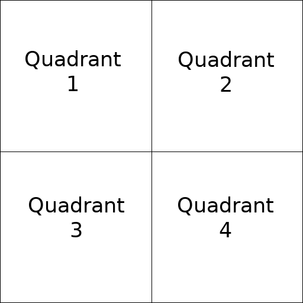
Each quadrant can be subdivided to allocate any number of shadow maps; the following is the default subdivision:
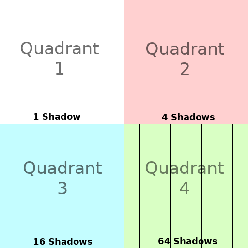
The shadow atlas allocates space as follows:
The biggest shadow map size (when no subdivision is used) represents a light the size of the screen (or bigger).
Subdivisions (smaller maps) represent shadows for lights that are further away from view and proportionally smaller.
Every frame, the following procedure is performed for all lights:
Check if the light is on a slot of the right size. If not, re-render it and move it to a larger/smaller slot.
Check if any object affecting the shadow map has changed. If it did, re-render the light.
If neither of the above has happened, nothing is done, and the shadow is left untouched.
If the slots in a quadrant are full, lights are pushed back to smaller slots, depending on size and distance. If all slots in all quadrants are full, some lights will not be able to render shadows even if shadows are enabled on them.
The default shadow allocation strategy allows rendering up to 88 lights with shadows enabled in the camera frustum (4 + 4 + 16 + 64):
The first and most detailed quadrant can store 4 shadows.
The second quadrant can store 4 other shadows.
The third quadrant can store 16 shadows, with less detail.
The fourth and least detailed quadrant can store 64 shadows, with even less detail.
Using a higher number of shadows per quadrant allows supporting a greater amount of total lights with shadows enabled, while also improving performance (as shadows will be rendered at a lower resolution for each light). However, increasing the number of shadows per quadrant comes at the cost of lower shadow quality.
In some cases, you may want to use a different allocation strategy. For example, in a top-down game where all lights are around the same size, you may want to set all quadrants to have the same subdivision so that all lights have shadows of similar quality level.
Balancing performance and quality
Shadow rendering is a critical topic in 3D rendering performance. It's important to make the right choices here to avoid creating bottlenecks.
Directional shadow quality settings can be changed at runtime by calling the appropriate RenderingServer methods.
Positional (omni/spot/area) shadow quality settings can be changed at runtime on the root Viewport.
Shadow map size
High shadow resolutions result in sharper shadows, but at a significant
performance cost. It should also be noted that sharper shadows are not always
more realistic. In most cases, this should be kept at its default value of
4096 or decreased to 2048 for low-end GPUs.
If positional shadows become too blurry after decreasing the shadow map size, you can counteract this by adjusting the shadow atlas quadrants to contain fewer shadows. This will allow each shadow to be rendered at a higher resolution.
Shadow filter mode
Several shadow map quality settings can be chosen here. The default Soft Low is a good balance between performance and quality for scenes with detailed textures, as the texture detail will help make the dithering pattern less noticeable.
However, in projects with less detailed textures, the shadow dithering pattern may be more visible. To hide this pattern, you can either enable Temporal antialiasing (TAA), AMD FidelityFX Super Resolution 2.2 (FSR2), Fast approximate antialiasing (FXAA), or increase the shadow filter quality to Soft Medium or higher.
The Soft Very Low setting will automatically decrease shadow blur to make artifacts from the low sample count less visible. Conversely, the Soft High and Soft Ultra settings will automatically increase shadow blur to better make use of the increased sample count.

16-bits versus 32-bit
By default, Godot uses 16-bit depth textures for shadow map rendering. This is recommended in most cases as it performs better without a noticeable difference in quality.
If 16 Bits is disabled, 32-bit depth textures will be used instead. This can result in less artifacting in large scenes and large lights with shadows enabled. However, the difference is often barely visible, yet this can have a significant performance cost.
Light/shadow distance fade
OmniLight3D, SpotLight3D, and AreaLight3D offer several properties to hide distant lights. This can improve performance significantly in large scenes with dozens of lights or more.
Enabled: Controls whether distance fade (a form of LOD) is enabled. The light will fade out over Begin + Length, after which it will be culled and not sent to the shader at all. Use this to reduce the number of active lights in a scene and thus improve performance.
Begin: The distance from the camera at which the light begins to fade away (in 3D units).
Shadow: The distance from the camera at which the shadow begins to fade away (in 3D units). This can be used to fade out shadows sooner compared to the light, further improving performance. Only available if shadows are enabled for the light.
Length: The distance over which the light and shadow fades (in 3D units). The light becomes slowly more transparent over this distance and is completely invisible at the end. Higher values result in a smoother fade-out transition, which is more suited when the camera moves fast.
PCSS recommendations
Percentage-closer soft shadows (PCSS) provide a more realistic shadow mapping appearance, with the penumbra size varying depending on the distance between the caster and the surface receiving the shadow. This comes at a high performance cost, especially for directional lights.
To avoid performance issues, it's recommended to:
Only use a handful of lights with PCSS shadows enabled at a given time. The effect is generally most visible on large, bright lights. Secondary light sources that are more faint usually don't benefit much from using PCSS shadows.
Provide a setting for users to disable PCSS shadows. On directional lights, this can be done by setting the DirectionalLight3D's
light_angular_distanceproperty to0.0in a script. On positional lights, this can be done by setting the OmniLight3D or SpotLight3D'slight_sizeproperty to0.0in a script.
Projector filter mode
The way projectors are rendered also has an impact on performance. The Rendering > Textures > Light Projectors > Filter advanced project setting lets you control how projector textures should be filtered. Nearest/Linear do not use mipmaps, which makes them faster to render. However, projectors will look grainy at distance. Nearest/Linear Mipmaps will look smoother at a distance, but projectors will look blurry when viewed from oblique angles. This can be resolved by using Nearest/Linear Mipmaps Anisotropic, which is the highest-quality mode, but also the most expensive.
If your project has a pixel art style, consider setting the filter to one of the Nearest values so that projectors use nearest-neighbor filtering. Otherwise, stick to Linear.